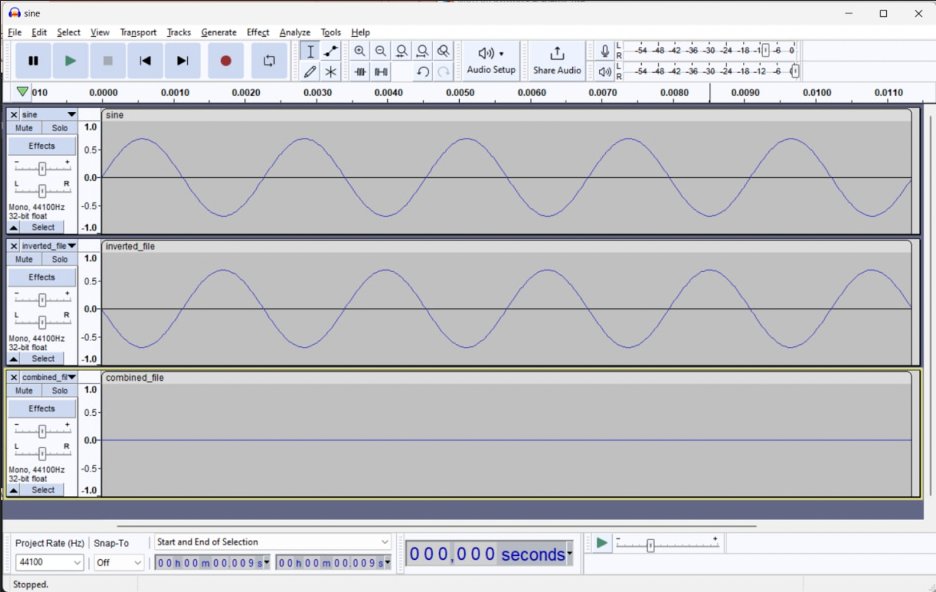
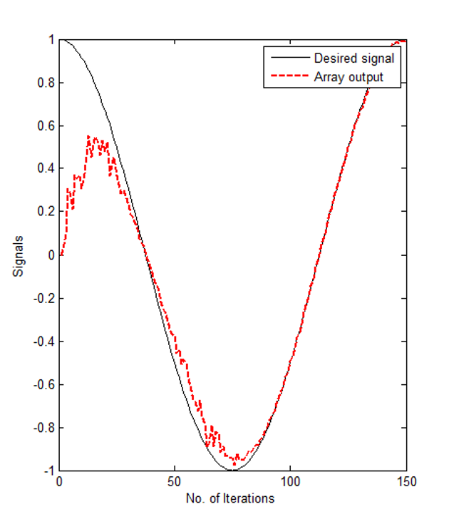
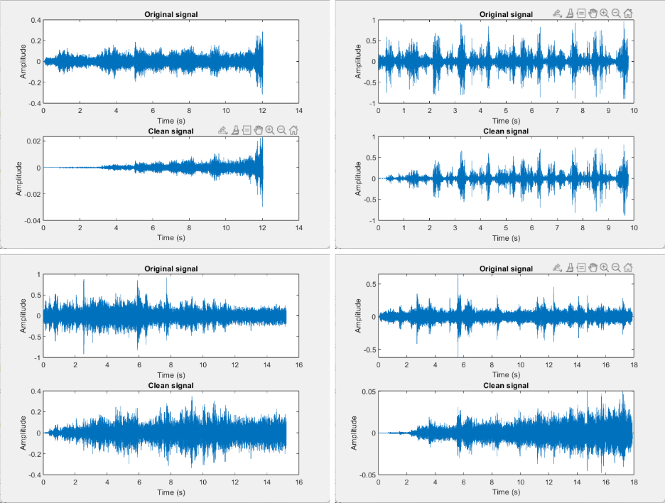

Noise Reduction
Developing an adaptive noise-reduction algorithm in MATLAB to reduce background noise while preserving important environmental sounds.
Overview
In a team of four, I helped develop and evaluate an adaptive noise-reduction algorithm using audio recorded across Carnegie Mellon’s campus. We collected real-world noise samples and implemented a Least Mean Squares adaptive filter in MATLAB to reduce background noise while preserving important environmental soundsm.
Algorithm Development
We initially considered generating an inverted waveform to cancel recorded noise through destructive interference. While effective for a known, repeatable signal, this approach was less suitable for environments where the acoustic conditions changed over time.

We instead implemented a Least Mean Squares adaptive filter, which continuously updates its filter coefficients based on the error between the filtered output and the desired signal. This allowed the algorithm to adapt to changing background noise rather than relying on a fixed cancellation waveform.

MATLAB Implementation
We implemented the signal-processing pipeline in MATLAB by converting recorded audio to a single-channel signal, generating a representative noise signal, and applying the LMS filter to produce a cleaned output.
We varied the filter length and step size to evaluate the tradeoff between convergence speed, stability, and filtering performance. The program also generated plots comparing the original and filtered signals and allowed us to listen to the processed recordings during evaluation.
Testing
We evaluated the algorithm using recordings from several high-traffic campus environments, including the gym, buses, lawn, and study areas.
We processed each recording through the MATLAB implementation and compared the original and filtered signals visually and audibly. We used the change in signal amplitude as a quantitative measure of noise reduction and listened to the processed recordings to verify that important sounds remained distinguishable.

Results
The LMS filter reduced measured noise amplitude by up to 95% across the test recordings. Qualitative listening checks also confirmed that important sounds, including emergency signals, remained distinguishable after filtering.